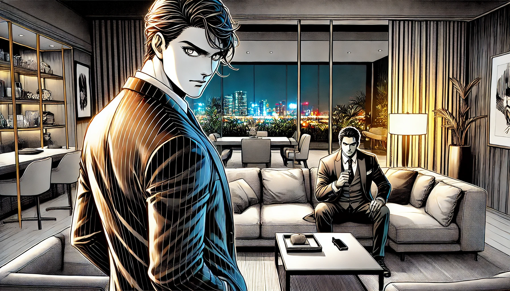

Chapter 3: First Mission
Marcus Steele's first mission as Specter 6 would define his role within Project Apex. Tasked with infiltrating a high-profile corporate retreat, Marcus needed to uncover a mole selling quantum computing secrets to foreign agents. Failure was not an option.
The disguise was flawless, but the stakes were higher than ever.
Marcus blended seamlessly into the crowd, his tailored suit hiding a myriad of tactical tools. His every movement was calculated, his demeanor exuding calm professionalism.
Harper (via comms): "Your target is on the move. Keep it quiet, Specter 6."
Marcus: "Understood."
Marcus’s precision and focus were unmatched as he tailed the suspect through the luxury resort. The faint hum of live music and laughter provided the perfect cover for his silent pursuit.
The tension was palpable.
Face-to-face with his target, Marcus had to balance diplomacy with the threat of force. His piercing gaze conveyed a silent warning, his hand subtly brushing the concealed weapon at his side.
beep beep beep
Using a hidden interface embedded in his cufflink, Marcus extracted critical data from the target’s encrypted device. His fingers moved with practiced efficiency, bypassing security protocols with ease.
Harper: "Extraction point is compromised. Improvise!"
Marcus: "Copy that. I’ll find another way."
The tranquil resort became a maze of danger as Marcus’s calculated escape turned into a high-stakes chase. Security personnel, alerted by the breached device, were closing in fast.
clink clink
Scaling the resort’s outer wall, Marcus relied on his enhanced gloves to maintain a secure grip. The distant city lights reflected in his sharp, determined eyes.
Harper: "Vehicle en route. ETA two minutes."
With adrenaline pumping and his cover intact, Marcus sprinted through an alley, evading the last of his pursuers.
The mission’s success came at a cost—a scar below Marcus's hairline, earned in a split-second confrontation that nearly derailed the operation. But he had proven himself as Specter 6, securing vital intelligence that would tilt the balance in Project Apex’s favor.
As Marcus watched the target's encrypted files decrypt in the safety of their command center, he couldn’t shake Harper’s earlier words: "Your greatest asset is your ability to adapt. Never forget that."